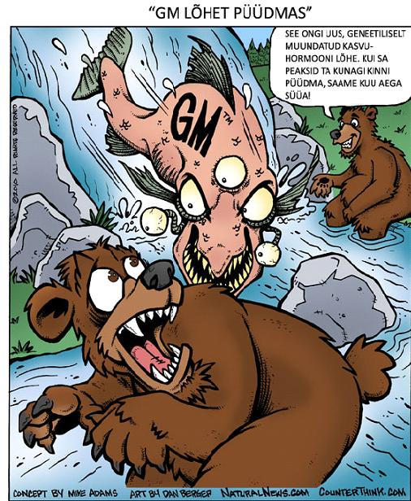

Seoses geenitehnoloogia kiire arenguga, seisavad loomakaitsjad silmitsi ühega suurimatest väljakutsetest ja rasketest valikutest. Transgeensed loomad, st. loomad, kellesse on kunstlikult sisestatud teiste loomade geene, võivad parandada inimeste heaolu mitmeti, kuid nende puhul kerkib esile mitmeid probleeme.
Vastupidiselt tavapärasele aretusele (mis toimub sama liigi geneetilise materjali piires), võimaldab geenitehnoloogia peaaegu piiramatut modifitseerimist, sealhulgas ka võõra geneetilise materjali kasutamist, nt võõra taime- või loomaliigi geneetilise materjali sisestamist teistesse taime- või loomaliikidesse. Sel viisil viiakse uude, transgeensesse liiki vaid soovitud tunnused. Lõpptulemusena saavad geenitehnoloogid luua geene, mida looduses varem olnud ei ole. Järelikult saab geenitehnoloogia abil luua organisme, kes ei ole meie planeedile loomulikud ning kelle geneetiline materjal on nii inimtegevuse kui ka loodusliku valiku tulemus. Sellest sõltuvalt on eetiliste, kultuuriliste ja keskkonnamõjudega arvestamine suure tähtsusega. 
Autor: Mike Adams. http://www.naturalnews.com